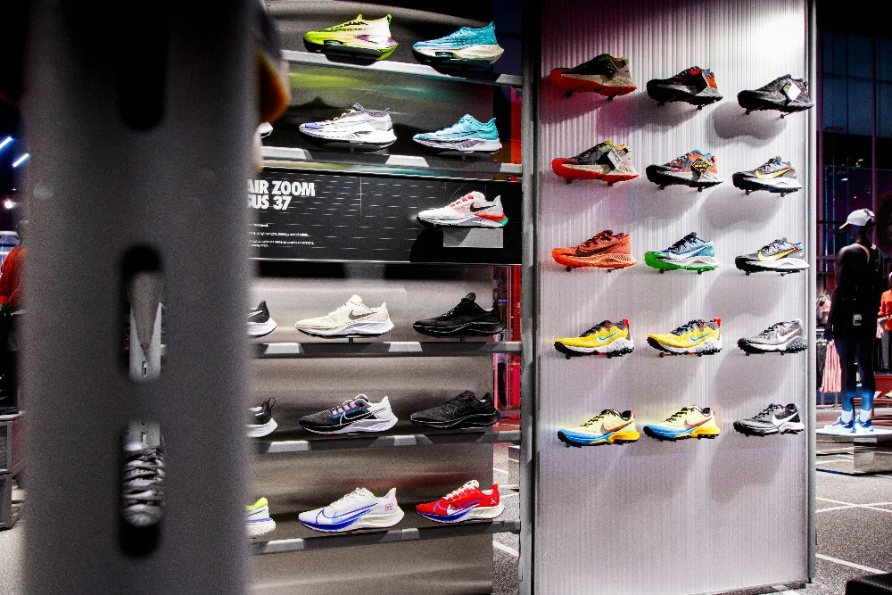
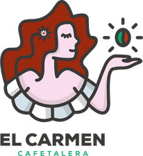
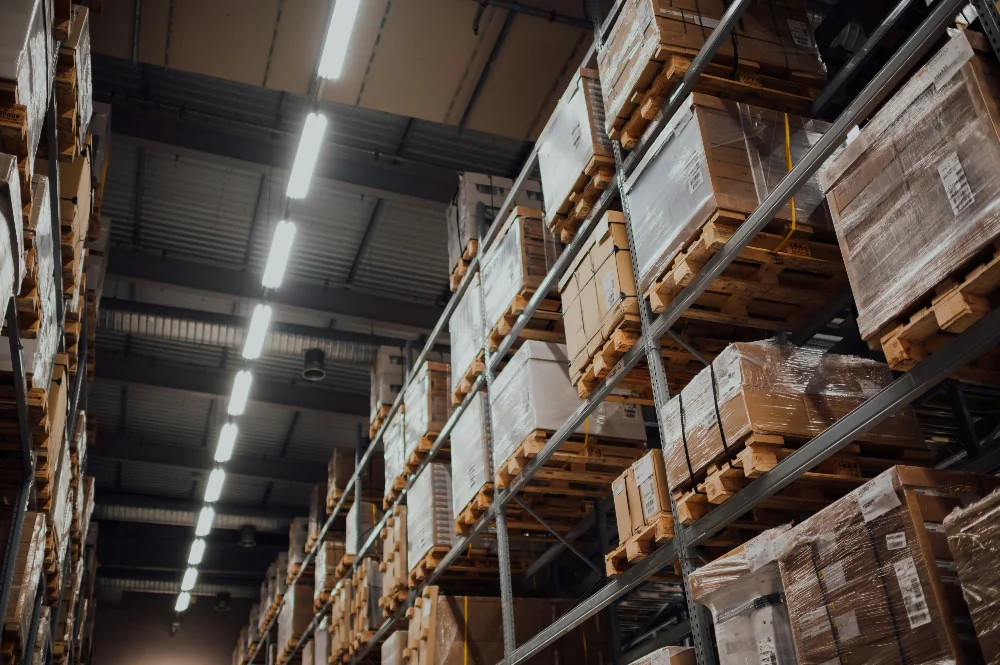
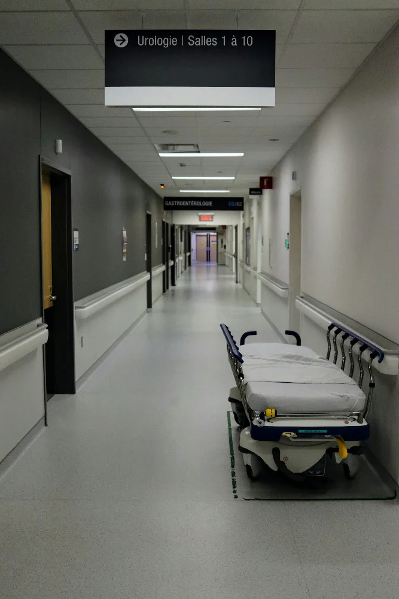
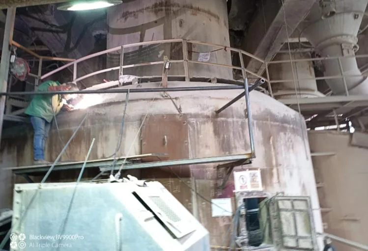

ÁREA DE ACTIVIDAD
Fotografía de referencia · Zapatería y retail
Calzado
Mantenimiento, adecuaciones y respuesta operativa para espacios comerciales del sector calzado.
ORGANIZACIONES3 EN EL DIRECTORIO
De la industria de procesos al comercio y las instituciones. Nuestra trayectoria reúne organizaciones con necesidades, entornos y desafíos distintos.


Explora las organizaciones incluidas en el perfil corporativo de ISC. Las que tienen trabajos documentados enlazan a sus proyectos; el resto se presenta únicamente en el directorio.
Mostrando 16 organizaciones de 4 sectores

Mantenimiento, adecuaciones y respuesta operativa para espacios comerciales del sector calzado.

Instalaciones, proceso, empaque y soluciones para alimentos y agroindustria.
 Alimentos San Cayetano
Alimentos San Cayetano

Cafetalera El Carmen Alimentos Ochoa
Alimentos Ochoa
 CAFINCO
CAFINCO

Infraestructura, mantenimiento, montajes y operación logística industrial.

Atención a espacios institucionales, de servicio y operación pública.
 Nacional Monte de Piedad
Nacional Monte de Piedad
 CFE
CFE
Los nombres y logotipos proceden del perfil corporativo de ISC. Su inclusión no indica necesariamente una relación comercial vigente. Las imágenes de cabecera por sector son fotografías de referencia para contextualizar cada categoría.
Algunas de las intervenciones que ISC documentó en su perfil corporativo.

Intervención en precalentador y trabajos electromecánicos.
Explorar trabajo documentado ↗Soluciones en acero inoxidable y tubería grado alimenticio.
Explorar trabajo documentado ↗
Mantenimiento, iluminación y adecuaciones en tiendas.
Explorar trabajo documentado ↗